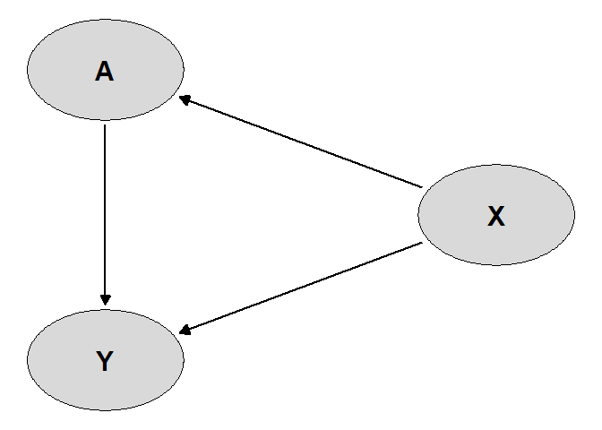

Simulate complex data from explicit data-generating processes in R.
simDAG is an R package for generating synthetic data from directed acyclic graphs (DAGs). Specify how variables are generated and how they depend on one another, then simulate datasets from the resulting data-generating process (DGP).
Beyond ordinary cross-sectional data, simDAG supports complex longitudinal processes, time-to-event outcomes, censoring, recurrent and competing events, and dependencies between individuals through networks. It additionally implements an enhanced formula interface, allowing specifications of arbitrary interactions, non-linear effects, dependencies on categorical variables and random effects. The development version also supports calibrating conditional model parameters to achieve user-defined target characteristics, including marginal effects.
Installation
Install the current CRAN release:
install.packages("simDAG")To install the development version from GitHub, including the new calibrate_dag() functionality:
install.packages("remotes")
remotes::install_github("RobinDenz1/simDAG")Quick start
Suppose we want to generate data with a continuous covariate , a binary treatment , and a binary outcome . Both treatment and outcome depend on , and the outcome also depends on treatment.
library(simDAG)
dag <- empty_dag() +
node("X", type = "rnorm", mean = 0, sd = 1) +
node("A", type = "binomial",
formula = ~ -0.5 + X * 0.6) +
node("Y", type = "binomial",
formula = ~ -1 + A * 0.7 + X * 0.4)
set.seed(43)
data <- sim_from_dag(dag, n_sim = 10000)
head(data)
#> X A Y
#> <num> <lgcl> <lgcl>
#> 1: -0.03751376 FALSE TRUE
#> 2: -1.57460441 FALSE FALSE
#> 3: -0.48596752 TRUE FALSE
#> 4: 0.46518623 TRUE TRUE
#> 5: -0.90409807 FALSE TRUE
#> 6: -0.27743280 TRUE FALSEThe DAG below represents the data-generating process: influences both treatment () and outcome (), while also influences .

Each node is generated according to its specified distribution or conditional model. The order of the nodes and their dependencies define the data-generating process. The same approach extends to much more complex DGPs, including custom generation functions and longitudinal processes.
What can you simulate?
| Use case | Main functionality |
|---|---|
| Cross-sectional data from a DAG | sim_from_dag() |
| Longitudinal data with time-varying variables | sim_discrete_time() |
| Continuous-time event-driven data | sim_discrete_event() |
| Data with dependencies between individuals | Network functionality |
| Data with custom conditional models | Custom node types and generation functions |
| Data with prespecified marginal characteristics |
calibrate_dag() (development version) |
Cross-sectional data
Generate data from static DAGs containing continuous, binary, categorical, count, and time-to-event variables. Nodes can be specified using conditional distributions, regression models or custom functions.
Learn more: Simulating Data from a Known DAG
Longitudinal data and survival processes
Use sim_discrete_time() to generate complex longitudinal data with time-varying covariates, time-dependent effects, censoring, recurrent events, and competing events.
For suitable models, sim_discrete_event() offers an alternative based on event-driven simulation in continuous time. It can be considerably faster than discrete-time simulation, although it supports a narrower range of time-dependent processes.
Learn more: Discrete-time simulation · Discrete-event simulation
Network-dependent data
simDAG also supports dependencies between individuals through static and dynamic network structures, allowing the generated data to incorporate network-based relationships.
Learn more: Simulating Data from a DAG with Network Dependencies
Specify marginal targets instead of manually tuning coefficients
When defining a DGP through conditional models, the resulting marginal characteristics are not always obvious. For example, specifying the coefficients of a logistic regression model does not directly specify the marginal prevalence of its outcome or the marginal causal effect of treatment.
The calibrate_dag() function addresses this problem by allowing users to leave selected parameters unspecified and determine them numerically so that user-defined targets are achieved as closely as possible.
For example, suppose we want an outcome prevalence of 30%, while retaining the specified relationships between treatment, a confounder, and the outcome.
ldag <- lazy_dag(
empty_dag() +
node("X", type = "rnorm", mean = 0, sd = 1) +
node("A", type = "binomial",
formula = ~ -0.5 + X * 0.8) +
node("Y", type = "binomial",
formula = ~ param(intercept_Y) +
A * 0.7 + X * 0.4)
)
targets <- list(
prevalence_Y = list(
target = 0.30,
eval_fun = function(data) mean(data$Y)
)
)
params <- list(
intercept_Y = list(
start = 0,
range = c(-5, 5)
)
)
fit <- calibrate_dag(
lazy_dag = ldag,
targets = targets,
params = params,
n_sim_run = 5000,
n_sim_eval = 20000,
seed = 42
)
summary(fit)
#> ────────────────────────────────────────────────────────────
#> Calibrated DAG
#> ────────────────────────────────────────────────────────────
#> Parameters (1)
#> parameter estimate start lower upper parscale
#> intercept_Y -1.135 0 -5 5 NA
#>
#> Targets (1)
#> target desired achieved error scaled_error
#> prevalence_Y 0.3 0.3069 0.00685 0.00685
#>
#> Optimization
#> Method: uniroot
#> Convergence: successful
#> Root residual: 0
#> Iterations: 8
#> Simulations: 5,000 optimization; 20,000 final evaluation
#> ────────────────────────────────────────────────────────────The result includes the calibrated parameters, the achieved target values, and optimization diagnostics. The resulting fully specified DAG is available as fit$dag and can be used with the usual simulation functions.
Calibration is numerical and approximate. Inspect the achieved target values rather than relying solely on optimizer convergence.
Learn more: Calibrating a DAG to Match Target Characteristics
Documentation and examples
- Package introduction and JSS paper
- Cookbook: examples of different DGPs
- Specifying formulas in a DAG
- Defining custom node types
- Function reference
If you are unsure which simulation approach fits your problem, the introductory vignette and cookbook are good places to start.
Citation
If you use simDAG in your research, please cite:
Denz, R. and Timmesfeld, N. (2026). Simulating Complex Cross-Sectional and Longitudinal Data using the simDAG R Package. Journal of Statistical Software, 116(2). https://doi.org/10.18637/jss.v116.i02
Contributing
Bug reports, questions about unexpected behavior, and feature requests are highly welcome. Please open an issue on GitHub.